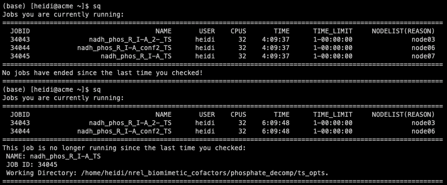

In-house
GoodVibes
GoodVibes is a Python package designed to compute thermochemical values from electronic structure frequency calculations. This program allows a user to collect energy, enthalpy, entropy, and free energies from quantum chemistry output files at variable temperatures and concentrations, while applying a variety of useful corrections including quasi-harmonic entropy corrections, zero-point energy corrections, and frequency scaling. Other features include Boltzmann averaging, relative energy and thermochemistry calculations and plotting, and duplicate checking.
Publication is available here
Documentation can be found in the Readme here
DBSTEP
DFT-Based Steric Parameters (or DBSTEP) is a Python package for collecting steric parameters from 3D molecular coordinates. Steric parameters available include percent buried volume, Sterimol (L, Bmin, Bmax) and new vectorized versions of these parameters, vol2vec and Sterimol2vec. This program can be used from the command line or in a script to obtain steric values from a variety of file formats or RDKit mol objects as input. Optional output allows for the visualization of the parameter measurements in PyMOL.
Documentation can be found in the Readme here
REGGAE
Regression Generator and Analyzer (or REGGAE) is an R-language script for statistical analysis of datasets. Statistical diagnostics include linear and non-linear regression modeling, feature selection, data splitting, pairwise correlations, ANOVA and QSAR analysis, PCA, and cross-validation analysis. Users can also generate plots for these analyses.
Documentation can be found in the Readme here
DISCO
(Insert short description here)
aqme
(Insert short description here)
Slurm Job Tracking
A Python script that will allow you to track completion of slurm jobs. Especially useful if you are running numerous jobs in numerous locations.
To install and use:
- Copy jobcheck.py to machine
You can copy the file anywhere; I chose my home directory.
(optional) Add alias to your .bashrc >> alias sq 'python ~/jobcheck.py'
- Run command
When you run for the first time, the script initializes and logs current job information.
Note you should run the command everytime aftet you submit jobs, or else it won't log current job info.
This is what it looks like when you run the command and a job has ended since the last time the command was run:

Now I can quick cd into the directory of the finished job, or copy it over to my local machine.